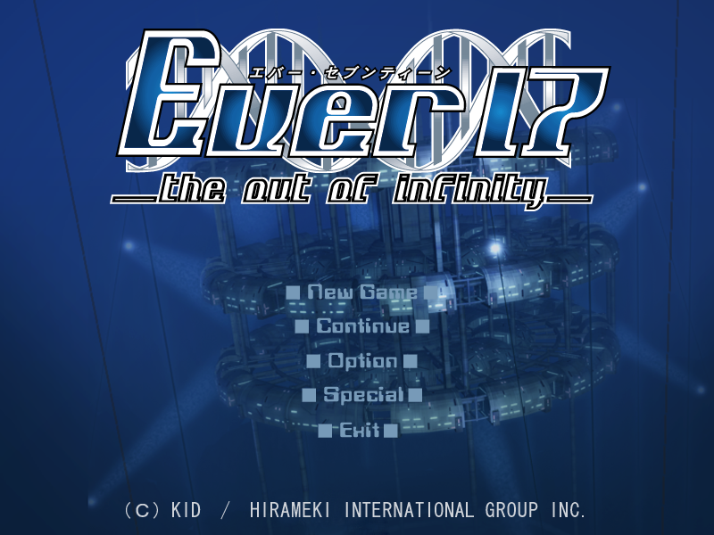
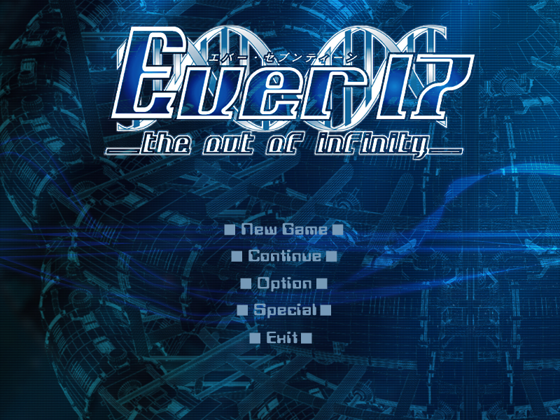
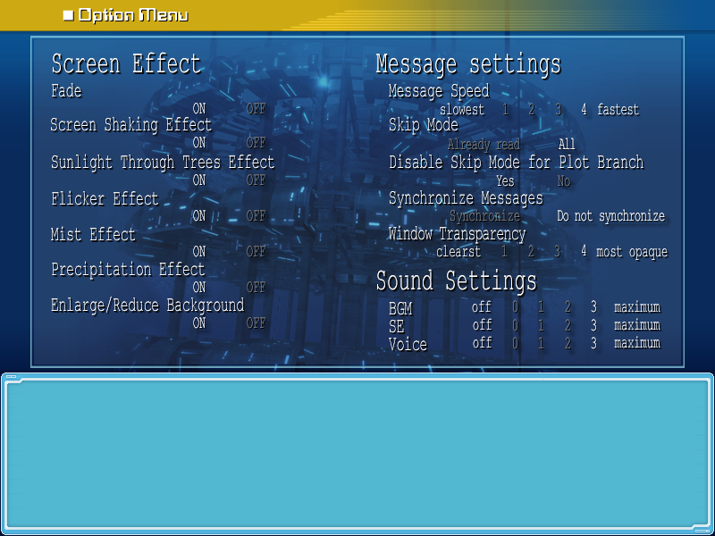
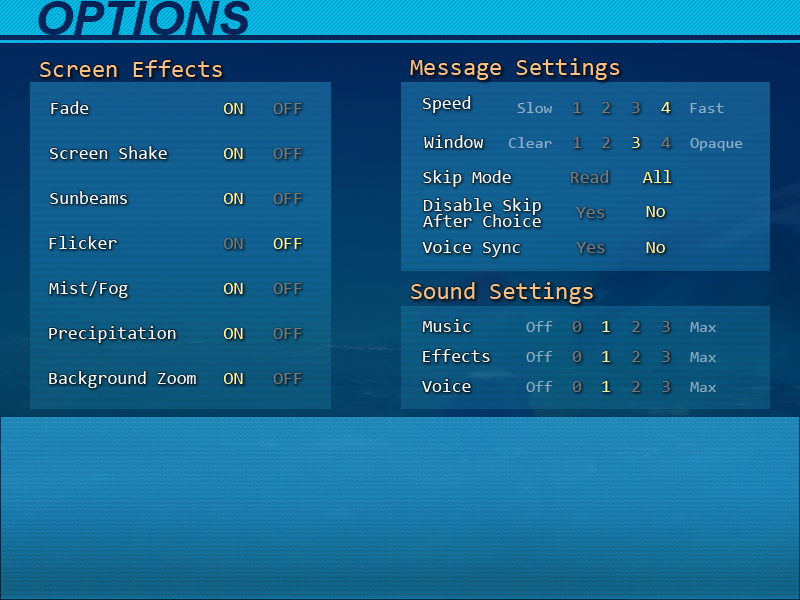
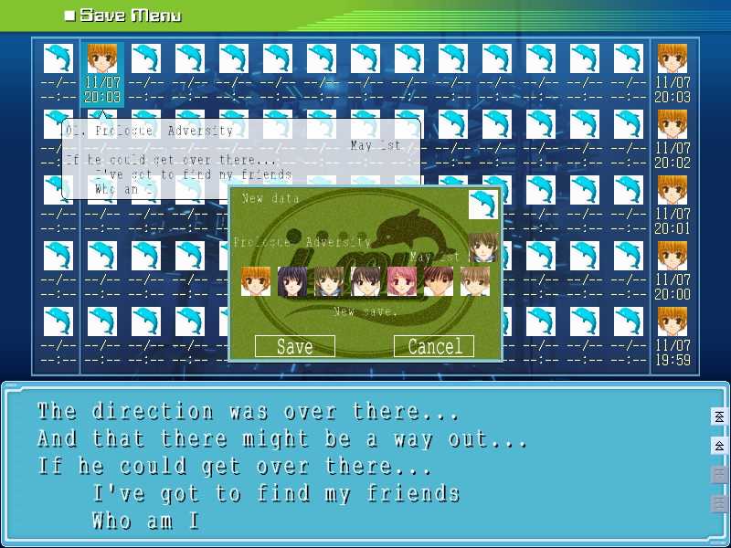
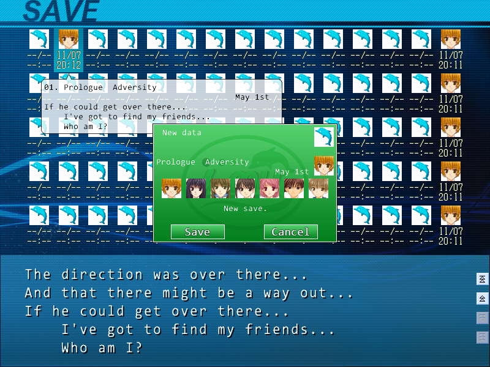
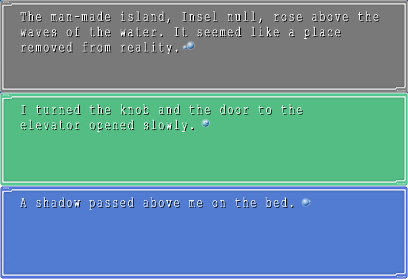
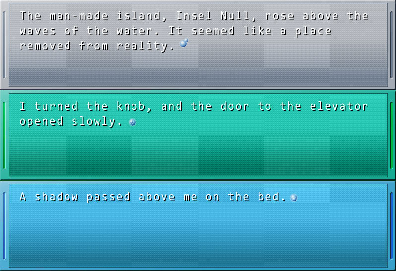
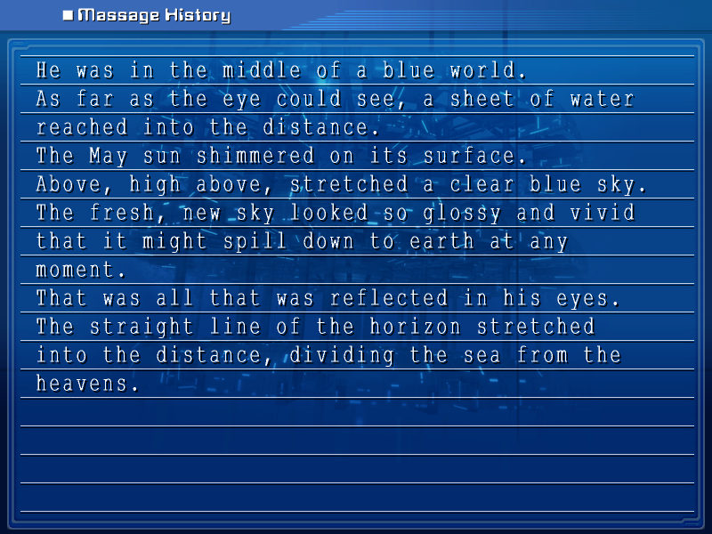
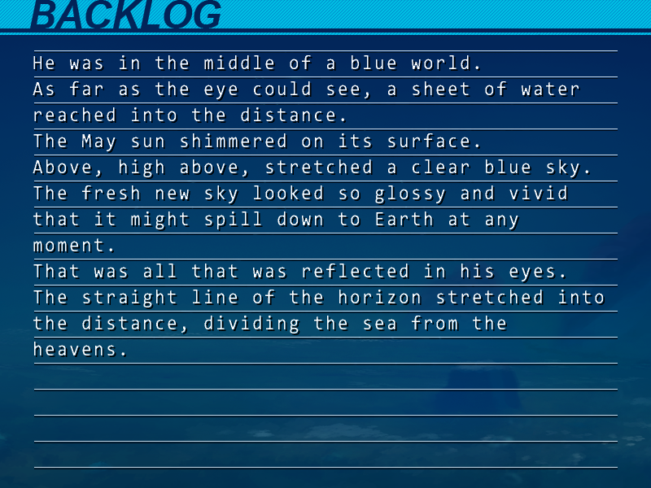

Simply extract the zip file into the game directory.
If the font does not look right, install the font located at "_font/lucon.ttf". This will install the Consolas font on your system.
If you run the unpatched version of the game, the font may revert. Overwrite "ever17PC_us.ini" with the patched version if that happens.
| Before | After |
|---|---|
|  |  |
|  |  |
|  |  |
|  |  |
|  |  |
The following is a full timeline of all events that happened in Ever17. This comes from the credits and also the chronology released with the PSP version of Remember 11.
1992
Sep 16:
Leiblich Pharmaceutical begins the development of LeMMIH.
Tanaka Yoichi (You's father) is employed as a technician to develop LeMMIH.
Dec 3:
Tom Faiblin is born
1993:
Unknown date:
Julia is born.
Jul 5:
Komachi Tsugumi is born.
1996:
Unkonwn date:
Kuranari Takeshi is born. (His birthdate takes place sometime between May
8th, 1996, and May 2nd, 1997.)
Unknown date:
Yukie (You's mother) starts working at Leiblich Pharmaceutical.
1998:
Unknown date:
Yoichi and Yukie marry.
1999:
Mar 30:
Tanaka Yubiseiharukana (You'haru') is born.
April:
Leiblich establishes the IBF, the underwater bio laboratory.
Jun 15:
Japanese government starts a plan to develop and populate the Komagahara
Archipelago. The Japan Agency of Marine Science and Technology starts
the "Third Seatopia Plan".
Those two plans handled by the government happen to be in sync with
Leiblich's own agenda. With the help of strong industries, financial
institutions, and the government itself financing it, LeMU Corporation
is established with Leiblich Pharmaceutical controlling most of its
stocks.
2000:
May:
Youichi learns that Leiblich is researching and developing the Tief Blau
(TB) virus.
Unknown date:
Yoichi goes missing. (Leiblich detains him)
2001:
Jun 14:
Kaburaki Ryogo is born.
2002:
Dec 17:
Yagami Coco is born.
2003:
Summer:
Tom saves his little sister from drowning in a lake.
By personally experiencing the revival of his sister from death by
asphyxiation, he begins to have delusions of "immortality" and the
"Immortality Contagion." Tom falls into paranoia.
2004:
April:
Construction of LeMU begins.
2005:
February:
Tom meets Dr. Cabin at a hospital in the U.S.
Unknown date:
Julia is admitted to the hospital where Dr. Cabin works. Since Julia is a
terminal cancer patient, her case is already considered beyond help.
Tom frequently visits Julia's hospital room.
August:
Tom strongly believes in the delusion of the "Immortality Contagion," and
tries to cure Julia's illness with that ability. Tom gently touches
Julia's forehead.
Cur� Syndrome begins / The Cur� Virus infects.
In the same day, Julia completely recovers from cancer. Throughout the
day, all of the in-patients in the same hospital as Julia begin to
completely recover from their illnesses, one by one. The "miracle"
spreads through the hospital in the blink of an eye, like some sort of
infecting "virus."
Tsugumi (12) gets infected by the Cur� Virus (C Virus) from Julia.
Unknown date:
Tsugumi is confined in a Leiblich facility
2006:
Unknown date:
Dr. Cabin proposes the "Cur�" Hypothesis.
2007:
April:
Construction of LeMU is completed and it is open to public.
2010:
Unknown date:
Trials surrounding a certain cloned human's birth are held in Japan. The
accused, a single scientist. He produced a clone of his own son.
Soon, his secret was leaked, and he was put on trial. He was given a life
sentence. However, after the contents of the cloned boy's testimony were
reported, public opinion instantly reversed, and movements started to
revise the law.
Unknown date:
The laws on cloning are revised.
Unknown date:
Tsugumi (17) stops aging due to the Cur� Virus.
2011:
Apr 2:
Sora is "born". The LeMMIH system begins operating, with Sora's age set to
be 24 years old constantly.
2012:
Unknown date:
An abnormality is found in Julia's DNA sequence, sending a shockwave
through the world of science.
2013:
December:
The uproar surrounding Julia gives credibility to the idea of "Cur�
Syndrome". Word of this begins to spread.
Unknown date:
Tsugumi escapes from Leiblich's facilities. Tsugumi escapes from L
Leiblich's facilities.
Unknown date:
You'haru' collapses. She is diagnosed with severe heart problems and given
3 to 4 years to live.
2014:
October:
A new type of virus is discovered in Julia's blood, and christened the
Cur� Virus.
October:
You'haru' meets Professor Morino in a state of complete hopelessness.
December:
You'haru' has her "new self" placed inside her womb.
2015:
Sep 22:
You'haru' gives birth to Yubiseiakikana (You'aki')
2017:
April:
You'haru' enters Kyumeikan Women's University.
May 1:
Takeshi, You'haru', Tsugumi, Coco, and Kaburaki are trapped in LeMU.
An accident occurs and the TB Virus escapes from IBF.
All present are infected with the TB Virus.
May 6:
Yoichi dies in IBF.
May 7:
Tsugumi conceives.
Coco and Takeshi are frozen and placed into cryogenic sleep in the IBF.
Sora (LeMMIH) shuts down.
You'haru' (18) and Kaburaki (15) are infected with the Cur� Virus.
LeMU implodes.
The IBF is unharmed.
Tsugumi becomes a fugitive once again.
You'haru' is contacted by Blick Winkel (BW) and learns the truth
She persuades Kaburaki to help her begin preparations for the Third Eye
Project.
TB (Bio Hazard Level 4) spreads around the world.
2018:
Jan 21:
Tsugumi gives birth to Sara and Hokuto.
October:
Construction to restore LeMU is completed.
Sora (LeMMIH) is rebooted.
2019:
Unknown date:
The TB Virus runs rampant in the world. The number of victims reaches
its peak.
Yukie is infected and passes away.
By the end of the year, the TB virus' damage calms down.
In order to protect Sara and Hokuto from Leiblich, Tsugumi places them
in an orphanage.
2020:
You'haru' completes the Third Eye hypothesis.
2021:
You'haru' (23) and Kaburaki (20) stop aging due to the Cur� Virus.
2024:
WHO (World Health Organization) declare TB eradicated.
Sara and Hokuto are captured by Leiblich.
2025:
March:
You'haru' completes her doctoral degree.
April:
You'haru' starts to work at LeMU Corporation.
Kaburaki starts to work at Leiblich Pharmaceutical.
Hokuto is released from Leiblich's facility.
2031:
April:
You'aki' enters Kyumeikan Women's High School.
2033:
April:
Sara, who enters Kyumeikan Women's High School as a scholarship
student, meets You'aki'.
2034:
April:
You'aki' enters Kyumeikan Women's University.
May 1:
Hokuto, You'aki', Tsugumi, Sara, and Kaburaki are trapped inside LeMU.
You'haru' and Kaburaki put the Third Eye plan into motion.
LeMU Implodes.
The Miracle of Aphrodite.
Blick Winkel awakens.
Takeshi and Coco are rescued by BW and Hokuto from the IBF.
The connection between Leiblich and the TB contagion is made public.
Government investigations are conducted.
Unknown date:
Leiblich Pharmaceutical (Japanese Division) as well as all related
facilities are shut down.
Thanks to everyone that made this possible. We've easily logged hundreds of man-hours on this project, so we hope you enjoy it! Shoutout to everyone on the Rokumei City discord server for providing support.
Special thanks to the original Ever17 translators, many of whom remain unidentified to this day. Special shoutout to Ryan Payton ("novery") who translated a chunk of the game and supposedly developed carpal tunnel due to the ridiculous deadlines. Yes, the translation was awkward at times, but it brought joy to thousands of people across the world. Thank you!